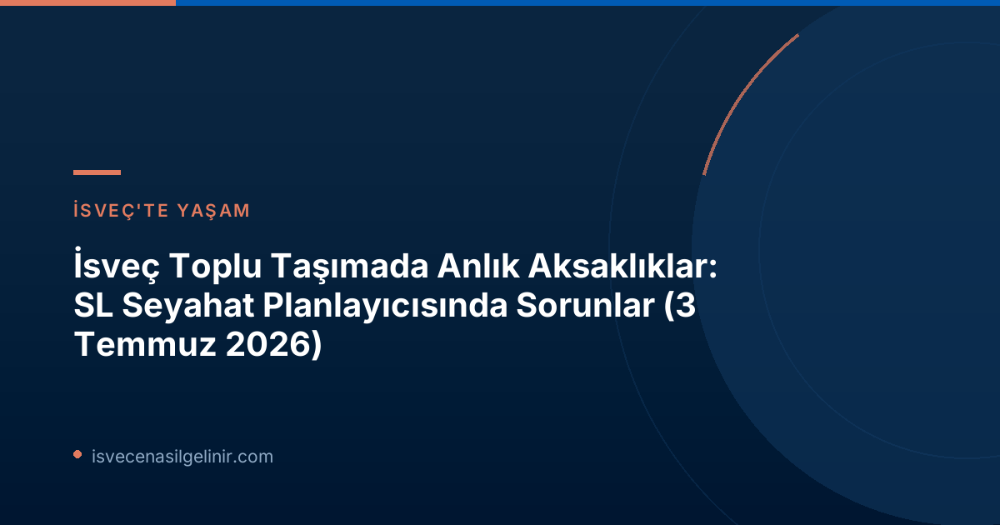

İsveç'e yeni gelenler veya burada yaşayanlar için günlük hayatın vazgeçilmez bir parçası olan toplu taşıma, zaman zaman beklenmedik aksaklıklarla karşılaşabiliyor. 3 Temmuz 2026 tarihi itibarıyla SVT Nyheter'in duyurduğu güncel haberlere göre, Stockholm ve çevresinde toplu taşıma hizmeti veren SL'in (Storstockholms Lokaltrafik) seyahat planlayıcısında teknik sorunlar yaşanmaktadır. Bu durum, özellikle şehirde yeni olanlar veya belirli bir varış noktasına ulaşmaya çalışanlar için bazı güçlükler yaratabilir.
SL Seyahat Planlayıcısı Neden Çalışmıyor? Güncel Durum
SVT Nyheter tarafından bugün (3 Temmuz 2026) sabah 05:09'da yayınlanan bilgiye göre, SL'in seyahat planlama uygulamasında ve web sitesinde teknik bir sorun meydana gelmiştir. Bu aksaklığın ne zaman giderileceğine dair henüz net bir süre öngörüsü bulunmamaktadır. Ancak SL yetkilileri, teknik sorunlara rağmen otobüs, tramvay, metro ve banliyö treni gibi tüm toplu taşıma araçlarının seferlerine normal şekilde devam ettiğini belirtmektedir. Bu, özellikle Stockholm'de yaşayan veya ziyaret eden göçmenler için önemli bir bilgidir; zira seferlerde bir aksama olmasa da, güzergah planlamasında zorluklar yaşanabilir.
Güncel Durum Özeti (3 Temmuz 2026)
- Kurum: SL (Storstockholms Lokaltrafik)
- Sorun: Seyahat planlayıcısı uygulamasında/web sitesinde teknik problemler
- Etkilenen Hizmetler: Güzergah planlama
- Toplu Taşıma Seferleri: Tüm araçlar normal şekilde çalışmaya devam ediyor
- Tahmini Çözüm Süresi: Belirsiz
İsveç'e adaptasyon sürecinde toplu taşıma gibi günlük yaşamın temel unsurlarındaki aksaklıklar, yeni gelenler için başlangıçta kafa karıştırıcı olabilir. Ancak bu tür durumlara karşı hazırlıklı olmak ve alternatif çözümler geliştirmek, süreci kolaylaştıracaktır. İsveç yaşamına dair daha kapsamlı bilgilere ulaşmak ve ülkeye entegrasyon sürecinizi destekleyecek kaynakları keşfetmek için sverigemedborgarskapsprov.com adresini ziyaret edebilirsiniz.
İsveç'te Toplu Taşıma Sorunlarıyla Başa Çıkma Rehberi
İsveç'te toplu taşıma gelişmiş ve genellikle sorunsuz olsa da, teknik aksaklıklar her sistemde olduğu gibi burada da yaşanabilir. Bu tür durumlarda hazırlıklı olmak, günlük planlarınızın aksamamasını sağlar. İşte İsveç'te toplu taşıma kullanırken karşılaşabileceğiniz sorunlara karşı pratik çözümler ve öneriler:
Alternatif Planlama Yöntemleri
- Haritaları Kullanın: Akıllı telefonlarınızdaki standart harita uygulamaları (Google Haritalar, Apple Haritalar vb.) genellikle canlı toplu taşıma verilerine sahiptir ve SL'in kendi planlayıcısı çalışmasa bile alternatif güzergahlar gösterebilir.
- SL Uygulamasının Temel Özellikleri: Seyahat planlayıcısı çalışmıyor olsa bile, SL uygulamasının diğer özellikleri (örneğin duraklardaki canlı kalkış saatleri) aktif kalabilir. Uygulamanın farklı bölümlerini kontrol ederek güncel bilgilere ulaşmaya çalışın.
- Duraklardaki Bilgilendirme Panoları: Büyük otobüs durakları, metro istasyonları ve tren garları genellikle canlı kalkış ve varış saatlerini gösteren elektronik panolara sahiptir. Bu panoları takip ederek en güncel bilgilere ulaşabilirsiniz.
İsveç'te Toplu Taşıma Hakkında Ek Bilgiler
İsveç'te yaşarken veya ziyaret ederken toplu taşıma sistemi hakkında genel bilgi sahibi olmak, bu tür sürprizlere karşı sizi korur:
| Öğe | Açıklama |
|---|---|
| SL Kartı (Access Card) | Tüm toplu taşıma araçlarında geçerli olan ve bakiye yükleyebileceğiniz ana kart. |
| Tek Kullanımlık Biletler | SL uygulamasından veya gişelerden satın alınabilir. Genellikle daha pahalıdır. |
| Geçerlilik Süresi | Bir bilet, genellikle belirli bir süre (örneğin 75 dakika) boyunca aktarmalı kullanıma izin verir. |
| Bilet Kontrolleri | Seyahatlerinizde beklenmedik bilet kontrolleriyle karşılaşabilirsiniz. Biletinizin her zaman geçerli olduğundan emin olun. |
İsveç'te uzun vadeli yaşamayı düşünenler için ülkenin kültürel ve toplumsal yapısını anlamak büyük önem taşır. Bu bağlamda, İsveç Vatandaşlık Testi'ne hazırlık ve vatandaşlık süreçleri hakkında bilgi edinmek, entegrasyonun önemli bir adımıdır. Sverigemedborgarskapsprov.com, bu süreçte size güvenilir ve güncel bilgiler sunan değerli bir kaynaktır.
Diğer Güncel Haberler (3 Temmuz 2026)
SVT Nyheter'in 3 Temmuz 2026 tarihli "Nattens nyheter" (Gecenin Haberleri) başlığı altında duyurduğu diğer konular arasında ise futbol dünyasından gelişmeler yer almaktadır. Portekiz ve İspanya, FIFA Dünya Kupası'nda son 16 turuna yükselerek turnuvadaki iddialarını sürdürmüşlerdir. Bu haberler, günlük spor gündemini takip edenler için ilgi çekici olsa da, İsveç'e göçmenlik süreciyle doğrudan ilişkili değildir ve daha çok genel bir bilgi olarak değerlendirilmelidir.
İsveç'te yaşama adaptasyon sürecinde karşılaşılabilecek her türlü duruma hazırlıklı olmak, bu deneyimi daha keyifli hale getirecektir. Unutmayın, bilgi ve hazırlık, yeni bir ülkede başarılı bir başlangıcın anahtarıdır.
İsveç'te Yaşama Dair Daha Fazla Bilgi Edinin
İsveç'e adaptasyon sürecinizde karşılaşabileceğiniz zorluklar ve fırsatlar hakkında detaylı içeriklerimizi keşfedin.